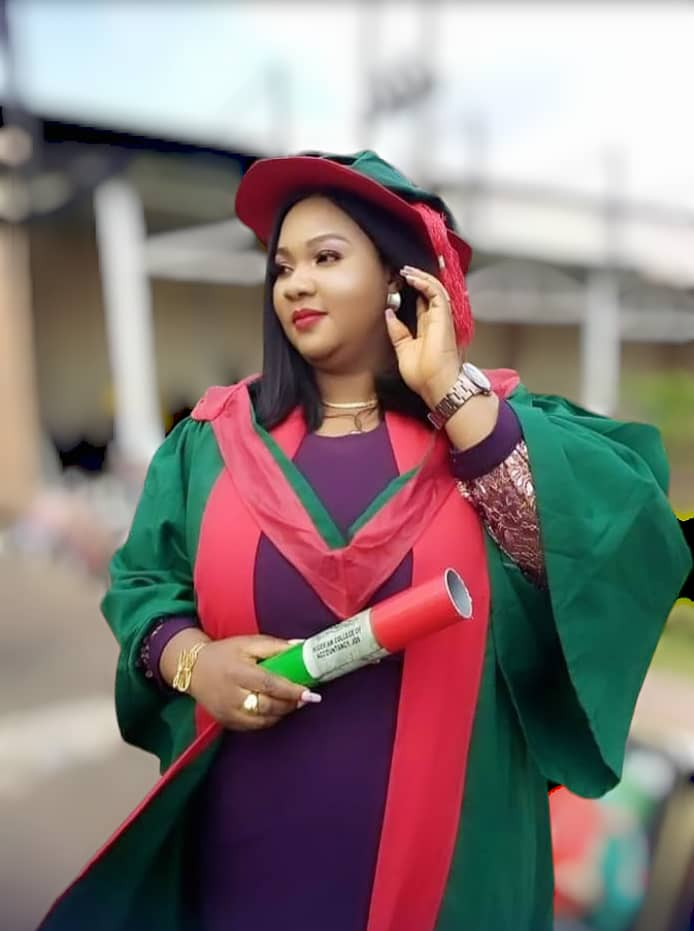

<!DOCTYPE html>
<html></html>
<head><title>Meet our CEO</title><p><a rel="stylesheet" href="color.css"></a></p></head>
<body><h1>MEET OUR CEO</h1></body>
<P>At the heart of Lyncos Stitches is our visionary leader, Dr. Mrs Oluchukwu Ugwueze</P>
<p>a Chartered Accountant and proud holder of a Doctorate Degree in Accounting</p>
<p>from the prestigious Enugu State University of Science and Technology (ESUT).</p>
<p>Beyond her strong academic and professional background, she brings passion, creativity, and excellence into the world of fashion.</p>
<P>Her unique blend of financial expertise and design vision drives Lyncos Stitches to stand out as a brand that values both quality and sustainability.</P>
<P>Under her leadership, Lyncos Stitches continues to inspire confidence, redefine unisex fashion, and put customers at the center of everything we do</P>
<p><a href="index.html">BACK TO HOME SCREEN</a></p>